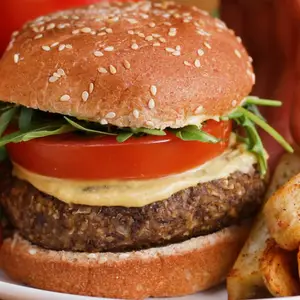

In a medium bowl, combine cubed chuck roll, salt, black pepper, thyme, and sliced garlic. Stir to coat. Cover and refrigerate to cure overnight.
Prepare the sauce: in a small mixing bowl, combine the mayonnaise, ketchup, relish, vinegar, lemon juice, salt, and pepper. Whisk together. Refrigerate to bring flavors together.
Using a stand mixer fitted with meat grinder attachment, grind the cured meat, layering in pieces of chopped bacon throughout. (Ensure the meat and grinder attachments are very cold before grinding! Recommended that you place it in the freezer for a few minutes just before using.)
Lightly mix together the ground meat and then form into six, 3 ounce balls.
To a hot, oiled, cast iron skillet, over medium/high heat - add the balls and allow to cook slightly. Using two spatulas layered on top of one another, press down on the burger to form into thin patties. Continue to cook until the underside has browned and caramelized.
Flip the burgers and continue to cook until the second side just begins to brown. Top with cheese and remove from the skillet.
To assemble: Spread the burger sauce onto both halves of a toasted potato bun. On the bottom bun, layer lettuce, tomato, and a sprinkle of salt. Add one burger patty, thinly sliced onions, then the second burger patty. Place 4 pickles onto the top bun and place on top of the burger.
Enjoy!
Mushroom Lentil Burger & Fries

Ingredients for 5 servings
MUSHROOM LENTIL BURGERS
1 tablespoon flax meal,
3 tablespoons water,
3 tablespoons olive oil ,divided
8 oz mushrooms (225 g), finely chopped
1 tablespoon soy sauce
½ teaspoon smoked paprika
1 small onion, diced
2 cloves garlic, minced
½ teaspoon salt
½ teaspoon pepper
1 ½ cups lentils (300 g), cooked
1 cup oats (100 g)
FRIES
4 russet potatoes,cut in wedges
olive oil
1 ½ teaspoons garlic powder
1 ½ teaspoons paprika
salt
pepper,to taste
ASSEMBLY
5 burger buns
dijon mustard
sliced tomato
fresh arugula
ketchup for serving
PREPARATION
Preheat the oven to 400°F (200°C).
To make the flax egg, combine the flax meal and water in a small bowl and stir. Set aside.
In a large saucepan, heat 1 tablespoon of olive oil over medium heat.
Once the oil begins to shimmer, add the mushrooms and cook until most of the juices have evaporated, 7-8 minutes.
Add the soy sauce and paprika and cook for 2-3 more minutes. Set aside in a large bowl.
Heat another tablespoon of olive oil over medium heat. Once the oil begins to shimmer, add the onion and cook for 3-5 minutes, until semi-translucent. Add the garlic and cook for 2 minutes. Add the salt and pepper and cook for another 2 minutes.
ransfer the onion to a food processor, then add the lentils, oats, and flax egg. Pulse until chunky, about 10-15 pulses.
Transfer the lentil mixture to the bowl with the mushrooms. Mix well, using your hands if needed, then shape into 5 patties. Place on a baking sheet and cover with plastic wrap, then freeze for 20 minutes.
While the patties are freezing, prepare the fries. In a medium bowl, toss the potatoes, a drizzle of olive oil, the paprika, garlic powder, salt, and pepper until well-coated.
Spread the fries on a baking sheet and bake for 15 minutes.
Remove the patties from freezer. In a large saucepan, heat the remaining tablespoon of olive oil over medium heat. Once the oil begins to shimmer, add 2-3 patties, careful not to overcrowd the pan. Cook for 5 minutes, then flip and cook for 5 minutes on other side. Repeat with the remaining patties.
To assemble the burgers, top each bun with a patty, then layer on dijon mustard, tomato slices, and arugula.